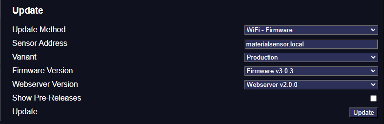
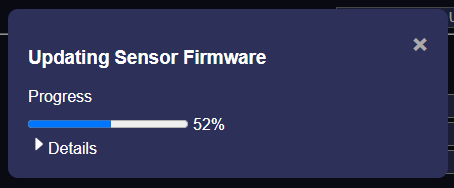
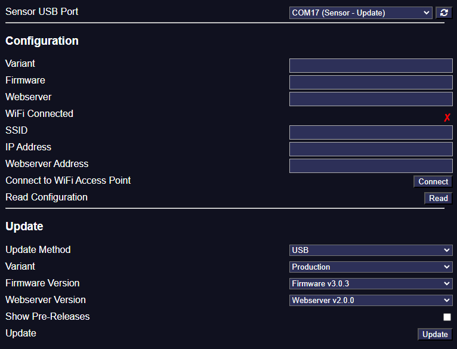
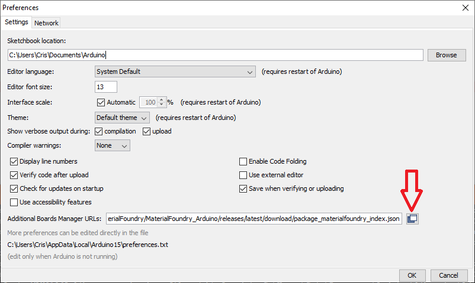
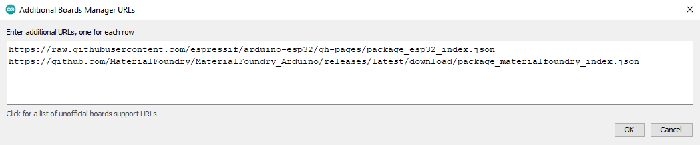
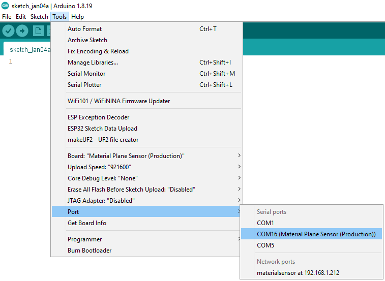
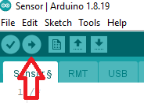
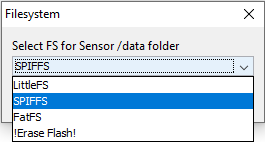

Updating Firmware
The sensor can be updated in 4 ways:
- Using Material Companion over WiFi
- Using Material Companion with a USB cable
- Using the sensor webserver
- Using the Arduino IDE (USB or WiFi)
The first time uploading the firmware to the sensor, you must upload using a USB cable (either using Material Companion or the Arduino IDE).
The sensor has 2 different things that require separate updates:
- Firmware: This is the code that is responsible for almost everything the sensor does, except for the webserver
- Webserver: This is the code that is responsible for the webserver
These may or may not receive updates at the same time. Depending on the update method you will either have to update these separately or they can be updated at the same time.
Finding the Current Version
You can find the versions of the firmware and webserver that are installed on your sensor in one of the following ways:
- Using Material Companion: The versions can be reported in the Sensor tab.
- Using the Sensor's Webserver: The versions will be displayed on the Status tab.
- Using the Module's Downloads Tab: The versions will be displayed in 'Current' column on the Downloads tab of the Material Plane configuration screen.
Finding the Latest Version
You can find the latest versions of the firmware and webserver in one of the following ways:
- Using Material Companion: The latest versions are displayed in the 'Update' section in the Sensor tab.
- Using the Module's Downloads Tab: The latest versions will be displayed in 'Latest' column on the Downloads tab of the Material Plane configuration screen.
- Using GitHub's Releases Page: The Releases Page on GitHub will list all the latest releases.
Material Companion (WiFi)
This method requires the firmware of the sensor to be v3.0.4 or later.
Material Companion has the option to update the sensor over your WiFi connection. For this to work, you will need to connect the sensor to your WiFi network.
You will need to update the firmware and webserver separately.

- Open Material Companion and navigate to the 'Sensor' sub-tab within the 'Material Plane' tab.
- At the bottom 'Update' section, select either 'WiFi - Firmware' or 'WiFi - Webserver' at 'Update Method'
- At 'Sensor Address' fill in the address of the sensor. By default this is 'materialsensor.local', but this is configurable in the sensor configuration. You could also fill in the sensor IP address, for example '192.168.1.20'
- Select the correct hardware variant of your sensor at 'Variant'
- At 'Firmware Version' and 'Webserver Version', select the version you want to update to the sensor
- Optionally, you could tick 'Show Pre-Releases' which will allow you to update a pre-release version (not recommended for normal use)
- Press the 'Update' button
-
A popup will appear that gives the update progress, you can press 'Details' to get more details about the progress.

-
If the update went succesfull the sensor will restart
Material Companion (USB)
Material Companion has the option to update the sensor over USB.
You can update the firmware, the webserver, or both.

- Open Material Companion and navigate to the 'Sensor' sub-tab within the 'Material Plane' tab.
- At the top, select the correct 'Sensor USB Port'.
- The production sensor will show up as 'COM## (Sensor)' or 'COM## (Sensor - Update) If it doesn't show up, try refreshing the USB ports.
If it shows up as 'COM## (Sensor)' press and hold the 'boot' button, then press the 'reset' button and release the 'boot' button. After refreshing the USB ports it should show up as 'COM## (Sensor - Update)'. - The DIY sensor will show up as 'COM##'. There may be multiple 'COM##' ports, see here if you are unsure which one is the correct one.
- The production sensor will show up as 'COM## (Sensor)' or 'COM## (Sensor - Update) If it doesn't show up, try refreshing the USB ports.
- At the bottom 'Update' section, select 'USB' at 'Update Method'.
- Select the correct hardware variant of your sensor at 'Variant'.
- At 'Firmware Version' and 'Webserver Version', select the version you want to update to the sensor. You can set one to 'none' to prevent one from updating.
- Optionally, you could tick 'Show Pre-Releases' which will allow you to update a pre-release version (not recommended for normal use).
- Press the 'Update' button.
-
A popup will appear that gives the update progress, you can press 'Details' to get more details about the progress.
-
If the update went succesfull you can restart the sensor.
Webserver
The firmware or webserver can be updated from the sensor webserver. You will have to update them separate from each other.
- Download the latest webserver (Webserver.bin) or firmware (Sensor_[variant]_Firmware.bin) from here.
- Navigate to the sensor webserver.
- Press the 'Update' button at the bottom of the 'Status'tab, this will navigate you to the update page.
- Select either 'Firmware' or 'Webserver', depending on which you want to update.
- Browse for the firmware or webserver file.
- The sensor will now be updated and will restart when its done.

Arduino IDE
The Arduino IDE gives you the option to update the firmware and webserver (separate from each other), and it even gives you the option to make changes to the code.
Steps 1 - 7 will only need to be done once.
You can upload using the Arduino IDE either over the USB cable or over WiFi (requires the firmware of the sensor to be v3.0.4 or later)
- Download and install the legacy Arduino IDE from here. Do not download Arduino IDE 2.x.x, you want 1.x.x
- Download and install the 'esp32fs plugin' from here
- Open the Arduino IDE and navigate to 'File' => 'Preferences'
- Near the bottom there should be a field for 'Addition Boards Manager URLs', click the button to the right of that field 
-
Fill in the following on separate lines
"https://raw.githubusercontent.com/espressif/arduino-esp32/gh-pages/package_esp32_index.json"
"https://github.com/MaterialFoundry/MaterialFoundry_Arduino/releases/latest/download/package_materialfoundry_index.json"
-
Restart the IDE, then navigate to 'Tools' => 'Board: xxx' => Boards Manager, which should open a new window
- Wait for the window to fully load, then search for and install 'esp32' (not 'Arduino ESP32 Boards') and 'Material Foundry'.

- Download and extract the 'Source code' from the latest sensor release
- Open 'Sensor.ino' in the Arduino IDE
-
Navigate to 'Tools' => 'Board: xxx' and select your harware version/board
- In most cases you will want to select 'Material Foundry' => 'Material Plane Sensor (xxx)', where you replace 'xxx' with your hardware variant
- If you use a board that does not fit within the default sensor variants, select your board from the 'ESP32 Arduino' list

-
Navigate to 'Tools' and select the correct 'Port'.
- To update over WiFi, select 'materialsensor at x.x.x.x' under 'Network Ports'
- The production sensor will show up as 'COM## (Material Plane Sensor (Production))' or 'COM## (ESP32S3 Dev Module).
If it shows up as 'COM## (Material Plane Sensor (Production))' press and hold the 'boot' button, then press the 'reset' button and release the 'boot' button. After refreshing the USB ports it should show up as 'COM## (ESP32S3 Dev Module)'. - The DIY sensor can show up with various names. There may be multiple 'COM##' ports, see here if you are unsure which one is the correct one

-
You can now update either the firmware or the webserver:
- Firmware: Press the 'Upload' button (arrow pointing to the right in the top-left part of the screen). Then wait for the IDE to compile and then upload the firmware

- Webserver: Navigate to 'Tools' and select 'ESP32 Sketch Data Upload', select 'SPIFFS' and press 'OK'. Then wait for the IDE to upload the webserver

Finding the Correct USB Port
For updates over USB, you will need to find the correct USB port over which the update can take place.
Some devices, such as the production sensor and dock may show up as named devices in Material Companion or the Arduino IDE, but other will not. To figure out the correct port, you can try one of these methods:
Using Material Companion
- Open Material Companion and navigate to either the 'Sensor', 'Base' or 'Pen' sub-tab in the 'Material Plane' tab
- Make sure the device is disconnected, then press the 'refresh' button next to 'Sensor/Dock USB Port'
- Take note of which ports are currently selectable
- Connect the device, wait a few seconds, and press the 'refresh' button again
- A new port should show up, this is the port you're looking for
Using the Arduino IDE
- Open the Arduino IDE
- Make sure the device is disconnected, navigate to 'Tools' and take note of which ports are available under 'Port: xxx'
- Connect the device, wait a few seconds, and navigate to 'Tools' again (this won't work if you stay in the 'Tools' menu while connecting the device)
- A new port should show up, this is the port you're looking for
Using Device Manager (Windows)
- Open the start menu and search for 'Device Manager'
- Make sure the device is disconnected, navigate to 'Ports (COM & LPT)' and take note of which COM ports are available
- Connect the device, wait a few seconds, and Device Manager should update and show a new COM port, this is the port you're looking for